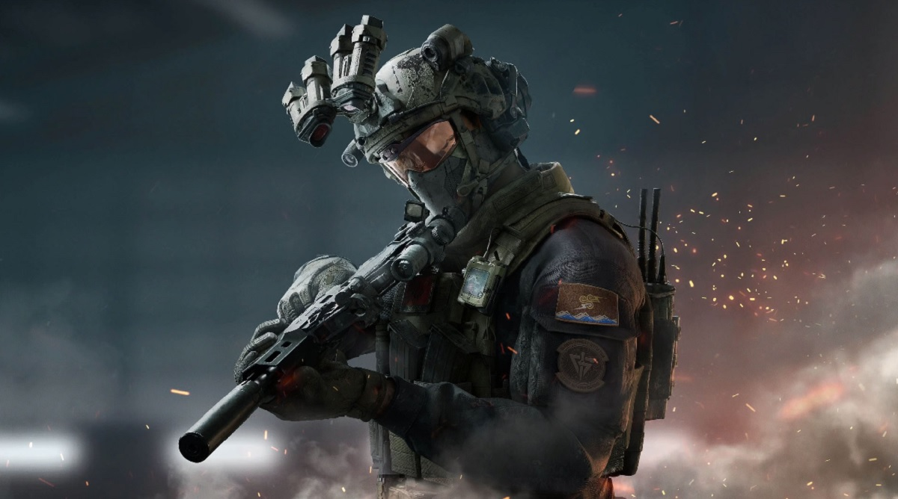

CAG (Cagville Armed Group) to społeczność pasjonatów broni, historii wojskowości i nowoczesnych technologii. Naszym celem jest dzielenie się wiedzą, doświadczeniem oraz budowanie pozytywnej atmosfery wokół tematyki militarnej.
Na tej stronie znajdziesz podstawowe informacje o CAG, naszych projektach, współtwórcach oraz linki do najważniejszych sekcji serwisu.
